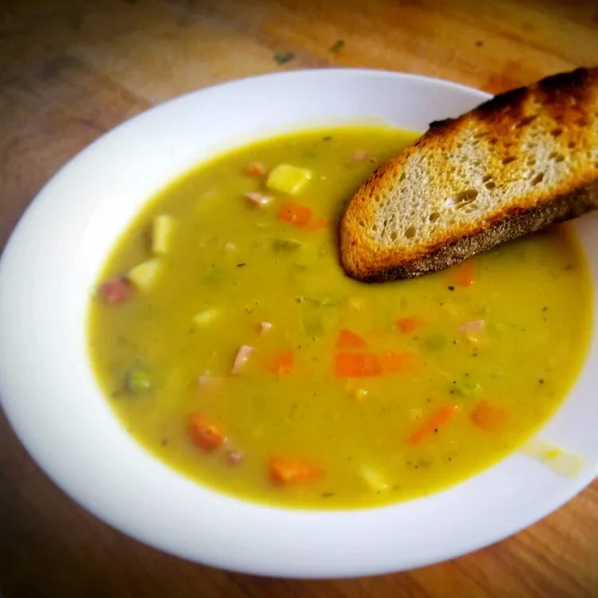

Split Pea Soup

Photo by Maggie Stryjewska-Kara. Source: allrecipes.com
A nourishing, hearty meal on a blustery fall or winter day
Ingredients
- 2 ¼ cups dried split peas
- 2 quarts cold water, plus more as needed
- 1 ½ pounds ham bone
- 2 onions, thinly sliced
- ½ teaspoon salt
- ¼ teaspoon ground black pepper
- 1 pinch dried marjoram
- 3 stalks celery, chopped
- 3 carrots, chopped
- 1 potato, diced
Recipe Instructions
- Soak, drain, and rinse the split peas. Place them in a pot.
- Add the water, ham bone, onions, and seasonings to the pot.
- Bring to a boil, then simmer for about 90 minutes.
- Remove the meat from the ham bone and return the meat to the pot.
- Add the vegetables and cook until the vegetables are tender.
Return to Main Page